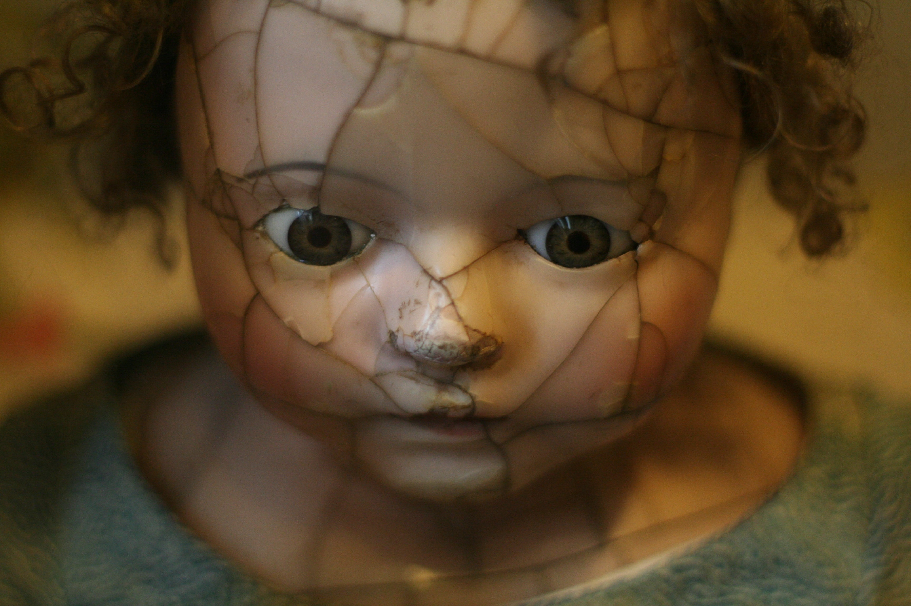

Insane Asylum, Whose idea was that?
Horror has been scaring people for centuries and movies are good way to get that adrenal gland going. Some of the scariest movies include The Exorcist, The Shinning, Scream, and many more. Some movies are concentrated on the shock value of gore such as House of a Thousand Corpses and The Hills Have Eyes. While there are movies that focus the psychological aspect such as Misery, Escape Room, Ma, and more.

There is a ton of different movies to choose from and several different genres of horror movies. Choosing a genre is dependent on what kind scare a person likes. Horror movies got there start as far back as 1896 and it is called The Haunted Castle or The House of the Devil as it is translated into English.
